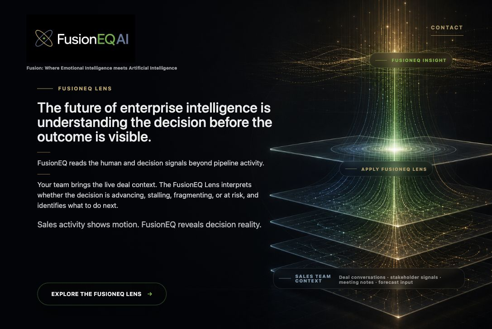
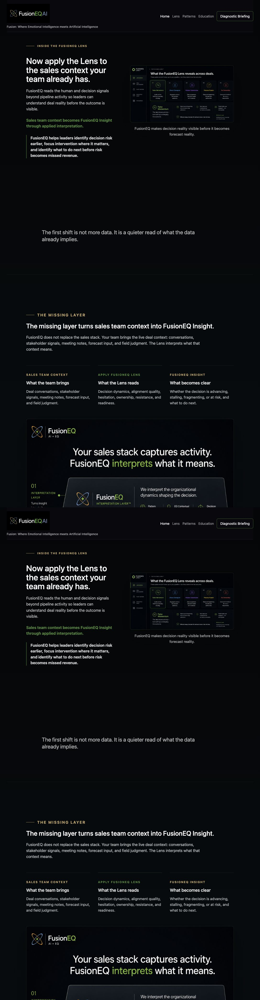
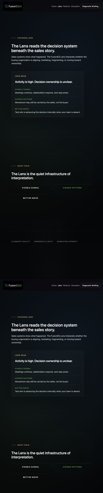
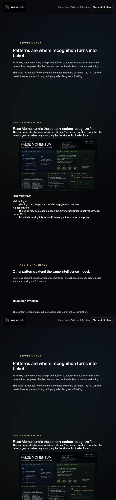
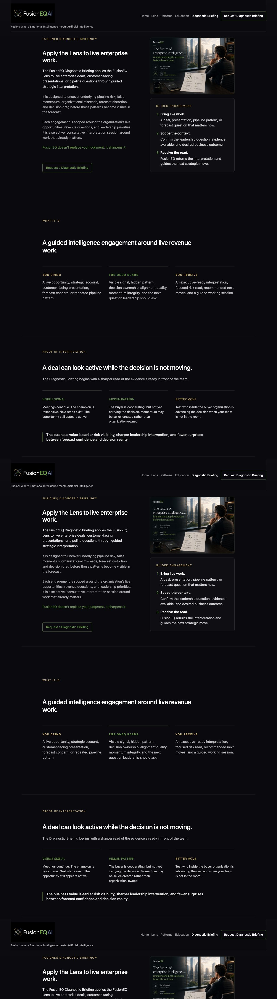

FusionEQ Concept Review
A guided enterprise intelligence journey.
This is a separate full-page review view of the protected FusionEQ concept direction. It keeps the cinematic entry as the emotional front door, then shows the cognitive choreography around the Lens, Patterns, and Diagnostic Briefing path.
The experience should feel like guided enterprise intelligence, not product onboarding.
Cinematic Entry
The emotional front door stays cinematic.
The entry page should remain the threshold: premium, quiet, and emotionally intriguing.

Post-Entry Orientation
The first read after the Lens.
This page begins the guided intelligence experience: the buyer moves from intrigue into interpretation.

Lens
The interpretation system becomes visible.
The Lens page explains the canonical model without turning it into methodology theater.

Patterns
Recognition turns into belief.
False Momentum, Confidence Without Evidence, Priority Drift, and Agreement Without Alignment make the idea operationally recognizable.

Diagnostic Briefing
The Lens meets live work through guided interpretation.
Diagnostic Briefing now carries the application layer: one focused proof moment, live-work interpretation, executive readout, and the guided engagement path.

Review Focus
Does this feel like guided enterprise intelligence?
The next review should focus on restraint, mobile pacing, the strength of the False Momentum proof moment, and whether Diagnostic Briefing feels premium, consultative, and enterprise-grade.